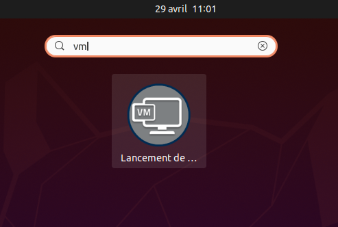

Les machines de TP à IMT Atlantique
À IMT Atlantique, les machines de TP fonctionnement sous Linux. Chaque utilisateur dispose d'un compte personnel (login/mot de passe) pour s'y connecter.
Dans cet environnement, les utilisateurs disposent de droits restreints afin de les empêcher de "casser" la configuration des machines.
En TP, il est souvent nécessaire de disposer des droits administrateur afin par exemple d'installer de nouveaux logiciels, de modifier certaines configuration ou de générer ou de capturer du trafic réseau.
Pour cela, nous utilisons des machines virtuelles (VM) Vous allez donc travailler dans ce type d'environnement.
Lancement de la VM "MPLS"
- Lancez l'application "Lancement de VM" depuis l'interface graphique.
Pour cela:
- Appuyez sur la touche "Super" du clavier (aussi appelée touche "Windows") pour lancer l'invite "Gnome Shell". Puis,
- Tapez "VM", et
- Cliquez sur l'icône de l'application.
- Sélectionnez ensuite la VM "TP-MPLS" et lancez la en cliquant sur le bouton "Valider".
- La VM devrait se lancer au bout de quelque temps.

Icône de lancement du gestionnaire de VM
Transfert du contrôle des ports USB à la VM
Dans l'activité "Internet des objets avec micro:bit", nous allons programmer les cartes micro:bit depuis la VM. Pour cela, il sera nécessaire que la machine physique délègue à la VM le contrôle du périphérique USB représentant la carte micro:bit. Pour cela, il faut:
- Brancher la carte micro:bit sur l'un des ports USB de la machine hôte.
- Puis, ouvrir le menu
Fichier->Sélection du périphérique USBde la fenêtre de la VM. - Sélectionner le périphérique
ARM "BBC micro:bit CMSIS-DAP". - Cliquer sur "Fermer"
À partir de ce moment, la carte n'est plus "vue" par le PC hôte mais depuis la VM.
NOTE: Il est nécessaire de refaire cette manipulation à chaque fois que la carte est débranchée du PC hôte.